Рассмотрим алгоритм работы с файлами и картинками в новом интерфейсе 1С:Предприятие 8.3 "Такси".
Во-первых, почему я решил написать эту статью: Новая концепция 1С - отказ от модальных окон, следовательно все методы и объекты, которые порождали открытие модальных окон в новом интерфейсе работать не смогут, точнее смогут, только если в свойствах конфигурации разрешить модальные окна.
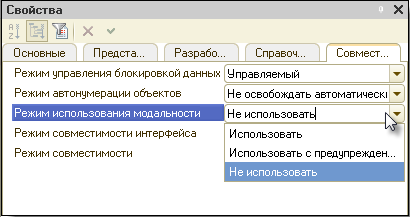
Однако, если разрешить модальные окна, то мы столкнемся с проблемами при работе в web-клиенте.
Во-вторых, о работе с картинками в управляемых формах часто спрашивают.
Итак, задача: в справочнике "Товары" необходимо сохранять и отображать в форме фотографию товара.
Исходная конфигурация не содержит ничего, кроме самого справочника с товарами, выкладывать ее не буду, просто создайте пустую конфигурацию в 8.3.
Для хранения самого графического файла, в справочнике создадим реквизит "ДанныеКартинки", с типом "Хранилище значений".
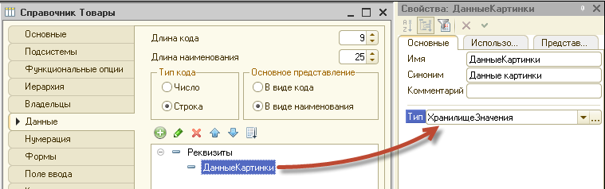
Если планируете выгружать картинку (файл) из информационной базы обратно в файловую систему, то добавьте еще реквизит, который будет хранить исходное имя файла и его тип.
Далее, займемся формой. Как видно на картинке, реквизит с типом хранилище значений в форме недоступен.
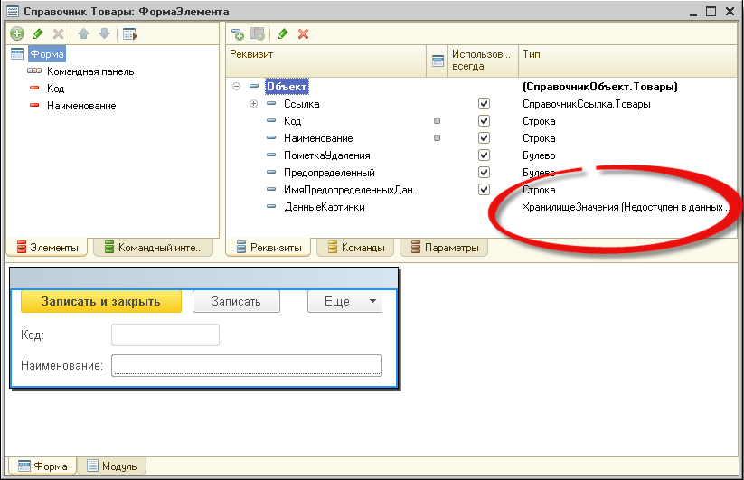
Как будем отображать картинку в форме? Нет, не декорацией с типом "картинка". А в виде реквизита формы с типом "строка". Да, да! Это очевидно, и странно, что мало кто об этом догадывается сам.
Все дело в том, что если на форму вынести реквизит с типом "строка", который будет содержать навигационную ссылку на графические данные или адрес временного хранилища которое содержит такие данные, то форма сможет отобразить сами графические данные.
Добавим реквизит формы с именем "СсылкаНаКартинку", тип "строка", длина не ограничена. И поместим его в реквизиты формы.
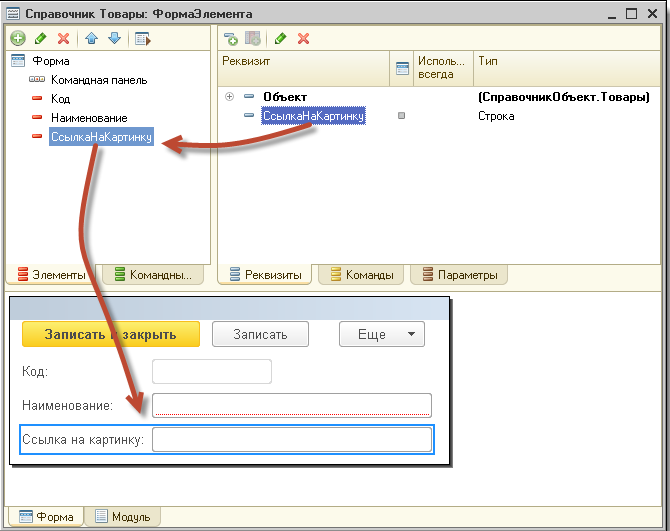
По умолчанию, строка в форме будет выглядеть как поле ввода, нам нужно поменять это, в свойствах элемента формы. Выберем в свойстве "Вид" "Поле картинки".
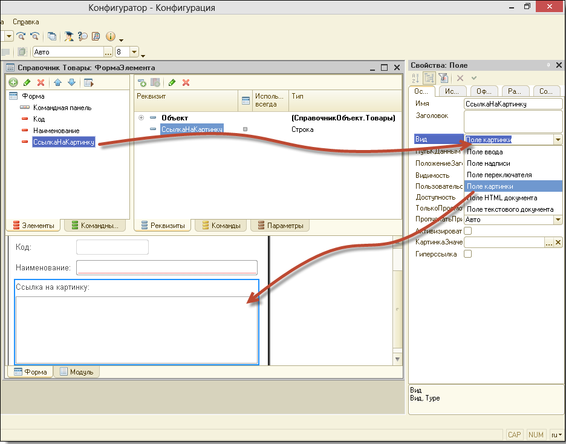
Интерфейсная часть готова. Займемся кодингом. Создадим команду формы "ВыбратьФайлКартинки", в виде кнопки расположим ее на форме.
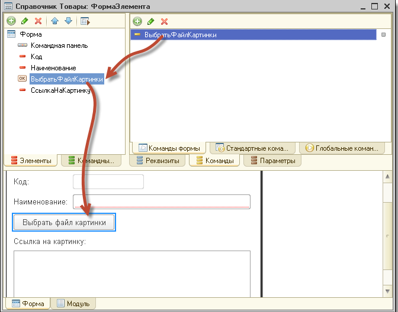
В модуле опишем обработчик события "Действие" для созданной команды формы:
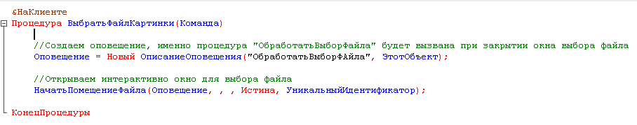
Пару комментариев к вышеописанному коду:
Если бы мы не обращали внимание на режим модальности приложения, то могли вполне использовать метод "ПоместитьФайл", однако цель статьи показать работу с файлами именно в таком режиме.
Метод НачатьПомещениеФайла помещает выбранный файл во временное хранилище (если выбор файла был произведен) и вызывает процедуру "ОбработатьВыборФайла" в этом же модуле.
Обращаю внимание на выделенный "УникальныйИдентификатор", этим свойством мы связали временное хранилище с текущей формой. В противном случае файл в хранилище помещен будет, но само хранилище при серверном вызовет будет уничтожено, а нам оно еще понадобится, для записи файла в реквизит справочника.
Опишем процедуру "ОбработатьВыборФайла":
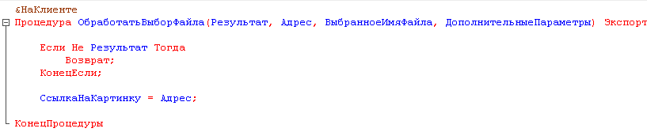
Если пользователь не отказался от выбора файла, то в реквизит формы "СсылкаНаКартинку" помещаем адрес во временном хранилище, куда были помещены данные картинки.
Вуаля!
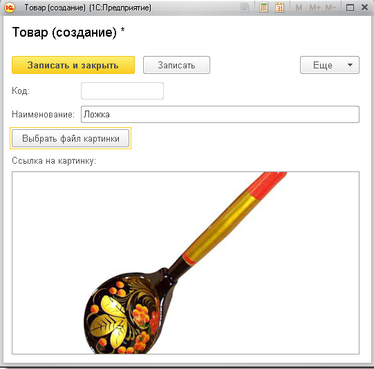
Так, осталось теперь при записи элемента справочника записать данные из временного хранилища в реквизит элемента справочника. Описываем событие ПередЗаписьюНаСервере:
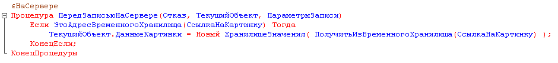
Проверяем в реквизите формы у нас что? Если адрес временного хранилища, пишем данные в реквизит элемента справочника, обращаясь к "ТекущийОбъект", "ТекущийОбъект" - это сконвертированные данные формы, которые пишутся в базу в этот момент времени.
Осталось описать открытие формы, для отображения картинки уже сохраненной в реквизите элемента справочника.
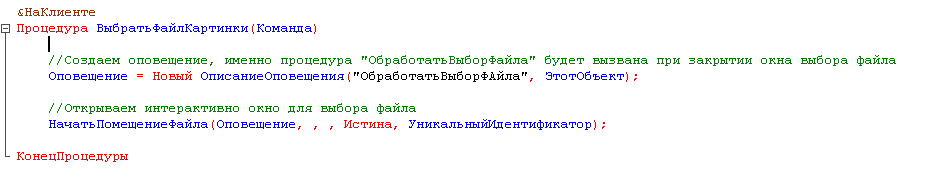